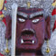

＃400 十勝慈母観音
山の上にそびえる大観音！ん？どっかで見たような…
＃399 富丘浄苑
北の大地にそびえるアナーキーな不動明王！
＃244 登別温泉の鬼たち
鬼、鬼、鬼、鬼…鬼だらけの温泉街。怖くておちおち風呂も入れません！
＃243 真駒内滝野霊園
デッカイどぉ…でっか過ぎるじゃないかあ！
＃098 北の京芦別
我が国最北限に自生する大観音とハイブリッド観光施設！
＃336 松緑神道大和山
世界で二番目に広い敷地を持つ教団が日本にあった！
＃324 津軽萬人観世音
あれだけ大きいのにこの知名度の低さ。シャイなのかな？
カミサマが住む信仰純粋培養地！
津軽のオシラサマ信仰のメッカ。ホットだぜ！
津軽の路傍から感じる熱い視線に目をやれば・・・
＃074 昭和大仏
ピンク色のお花畑、よくよく見れば・・・
＃048 さざえ堂；その2まだまだありました。さざえ堂、日本は広い！
＃023 川倉賽の河原地蔵尊
津軽最強のスピリチュアルスポット, 涙なくしてみれないよ
＃022 高山稲荷神社
東北って・・・ディープ
＃445 幡龍寺
美しすぎる穴開き石奉納とワンちゃん供養の寺
一万体の仏像を彫り続けた漢の生き様を見よ！
赤い布に彩られた信仰世界！深い！
堂内で繰り広げられる無言の宴の数々
見えないザシキワラシを視覚化してみました！祭
＃104 盛岡大仏
句碑は続く〜よ〜 ど〜こまでもぉ〜
＃058 釜石大観音老舗の大観音、奮闘す！
＃194 岩城修弘霊場熱いメッセージに埋め尽くされた珍霊場！
＃193 赤田大仏、折渡千体地蔵亀田藩時代の名僧☆是山和尚の功績2題を堪能すべし！
＃192 人形道祖神あまりにも多種多彩な農村の守護神を見よ！
＃191 鹿島送り
も〜えろよ も〜えろよ〜 炎よ燃えろ〜
＃059 田沢湖大観音
音と光のハイテク曼茶羅！凄い！
＃021 真山の万体仏
ちっちゃいお堂の中に、万の仏が・・・入りきるのか？
山形県
＃432 立石寺＆垂水遺跡
人知れずもう一つの山寺があった！
＃427 大滝不動尊
誰も訪れることのない峠にある不動サマと無数の鉄剣
＃334 最上地方の山の神
中学生が作った神様に日本の原初的信仰風景を見る
＃279 ムカサリ絵馬3
ムカサリ絵馬の南限生息域からみえてくるその習俗の本質！
岩に隠れた羅漢さんを全部探すのだあ！
またまたムカサリ絵馬巡り！
謎の大仏と奇妙な奉納物
犬が好きだワン〜猫が好きだニャ〜
＃147 ムカサリ絵馬
静寂の堂内で繰り広げられる無言の結婚式。涙無しには見れないよ。
＃444 陸奥国総社宮と荒脛巾神社
濃密な信仰の現場。その裏に何があったのか？
三陸の漁師に伝わる謎の奉納習俗！
＃146 愛子大仏
＃105 船岡観音
＃060 仙台大観音
＃460 関脇優婆夷尊
厳しい自然の中で子を産み育てる難しさを心底実感する
＃321 賽の河原
あの震災を経て激変した賽の河原霊場にあったものとは？
＃251 正雲寺
地獄を見てバビロン仏教からのエクソダスを内観せよ！
＃242 左下観音
山中に忽然と現れる謎だらけの木造摩天楼！
＃235 百尺観音
三代にわたって作られる未完の大観音！
魅惑の洞窟巡りと変なお堂
山あいの街道筋に立つ巨大境界神。
＃089 仏の里
山の中に誰にも知られず佇む大観音の廃虚、のはずが・・・
＃081 会津村
大観音の客寄せ企業努力は実ったのか！？
＃047 東堂山昭和羅漢
無法羅漢の網走番外地
珍寺大道場 HOME